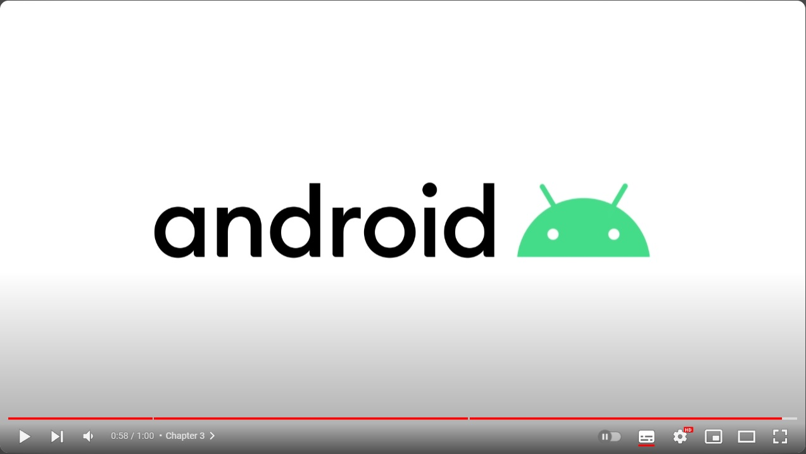

História do mascote android
Provavelmente você sabe que o sistema operacional Android, mantido pelo google é um dos mais ultilizados para dispositivos móveis em todo o mundo. Mas talvez você não saiba que o seu simpático mascote tem um nome e uma história muito curiosa? Pois acompanhe esse artigo para aprender muita coisa sobre esse robozinho.
A primeira versão
A primeira tentativa de criar um mascote sutgiu em 2007 e veio de um desenvolvedor chamado Dan Morill. Ele conta que abriu o inkscape (software livre para a vetorização de imagens) e criou a sua própria versão do robô. O objetivo era personificar o sistema apenas para a sua equipe, não existia nenhuma solicitação da empresa para a criação de um mascote.

Essa primeira versão bizarra até foi batizada em homenagem ao seu criador, seriam os Dandroids.
Surgem um novo mascote
A ideia de ter um mascote e a missão foi passada para uma profissonal da área. A ilustradora russa Irina Blok também funcionária do Google, ficou com a missão de representar o pequeno robô de uma maneira mais agradável.

A ideia principal da Irina era representar tudo graficamente com poucos traçados e de forma mais chapada. O desenho deveria gerar identificação rápida com quem o olha. Surgiu então o Bugdroid, o novo mascote do Android.

A principal inspriração para os traços de novo Bugdroid veio daqueles bonequinhos que ilustram portas de banheiro para indicar o gênero de cada porta. Conta a lenda que a artista estava crianda em sua mesa no escritório do Google e olhou para o lado dos banheiros e a identificação foi imediata: simples, limpo e objetivo.
Quer aprender mais?
Outro assunto curioso em relação ao Android é que cada versão sempre foi nomeada em homenagem a um doce, em ordem alfabética a partir da versão 1.5 até a 9.0.
- 1.5 - Cupcacke
- 1.6 - Donut
- 3.0 - Eclair
- 2.2 - Frovo
- 2.3 - Gingerbread
- 3.0 - Honeycomb
- 4.0 - Ice cream Sandwich
- 4.1 - Jelly Bean
- 4.4 - KitKat
- 5.0 - Lolipop
- 6.0 - Marshmallow
- 7.0 - Nougat
- 8.0 - Oreo
- 9.0 - Pie
Infelizmente, o Android Q não existiu, pois o Google resolveu pôr fim a essa divertida prática e começou a usar numerações, o que deu origem ao Android 10.
Acesse aqui o site: Android History para conhecer a sequência das versões "adocicadas" e o que cada uma trouxe para o sistema Android.
Então é isso! Espero que você tenha gostado do nosso artigo com essa curiosidade sobre o sistema Android e seu simpático mascote.